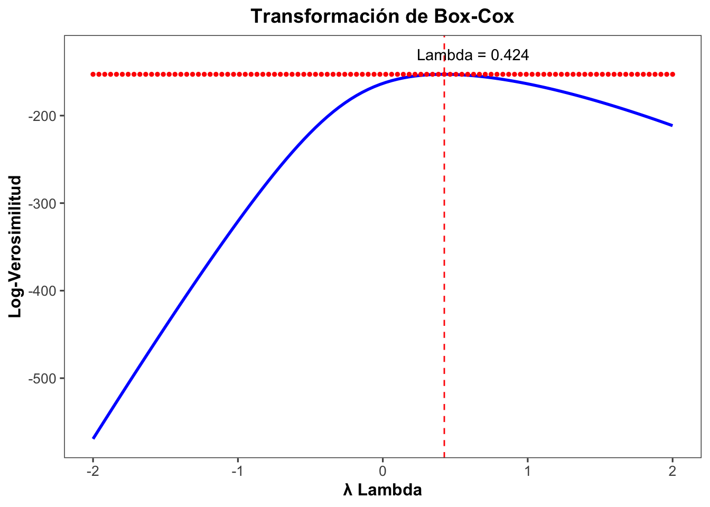

Codigo
library(MASS)
library(ggthemes)
library(ggplot2)La transformación de variable tipo Box-Cox es una técnica utilizada en análisis estadístico para mejorar la adecuación de los datos a los supuestos de normalidad y homogeneidad de varianza. Esta transformación es especialmente útil para variables continuas positivas que presentan asimetría o heterogeneidad de varianza. La transformación de Box-Cox se define mediante la siguiente ecuación:
y ( λ ) = (x^(λ) - 1) / λ Donde:
λ es lambda.x es la variable original.y(λ) es la variable transformada para un valor determinado de λ.λ es el parámetro de transformación que puede variar desde -∞ hasta +∞.El valor de λ determina el tipo de transformación aplicada:
λ = 0 , la transformación de Box-Cox es equivalente al logaritmo natural (ln).λ = 1 , la transformación de Box-Cox es equivalente a una transformación lineal (sin transformación).λ < 0 , se aplica una transformación inversa.Para realizar este tipo de transformación, se utiliza el paquete MASS en R.
Utilizaremos el conjunto de datos InsectSprays disponible en R para ilustrar la transformación de Box-Cox. La función boxcox() se utiliza para calcular la transformación de Box-Cox y encontrar el valor óptimo de λ para una variable específica. Esta función devuelve una lista de resultados, incluyendo el valor óptimo de λ y gráficos de diagnóstico.
Primero, se ajusta un modelo lineal simple para la variable count con un ajuste adicional de 0.1 para evitar valores cero.
El valor óptimo de λ se encuentra seleccionando el valor de λ que maximiza la log-verosimilitud devuelta por boxcox().
# Crear DataFrame a partir de los resultados de boxcox
boxcox_df <- data.frame(
lambda = b$x,
log_likelihood = b$y
)
# Graficar con ggplot2
ggplot(boxcox_df, aes(x = lambda, y = log_likelihood)) +
geom_line(color = "blue", size = 1) +
geom_vline(xintercept = lambda, linetype = "dashed", color = "red") +
geom_point(aes(x = lambda, y = max(log_likelihood)), color = "red", size = 1) +
annotate("text", x = lambda + 0.2, y = -130,
label = paste("Lambda =", round(lambda, 3)),color = "black") +
labs(title = "Transformación de Box-Cox",
x = "λ Lambda",
y = "Log-Verosimilitud") +
theme_few()+
theme(
plot.title = element_text(hjust = 0.5, face = "bold", size = 14),
axis.title = element_text(face = "bold", size = 12),
axis.text = element_text(size = 10)
)
count:Utilizando el valor óptimo de λ, se transforma la variable count y se almacena en una nueva variable count2.
Se crean histogramas para comparar la distribución de la variable original y la transformada.
La transformación de Box-Cox es una herramienta útil para transformar datos y cumplir con los supuestos de normalidad y homogeneidad de varianza necesarios en muchos métodos estadísticos. Mediante el ajuste del parámetro λ, se pueden lograr distribuciones de datos más simétricas y con varianza constante, facilitando análisis más precisos y válidos.
### Transformación de Variable Tipo Box-Cox en R Quarto
La transformación de variable tipo Box-Cox es una técnica utilizada en análisis estadístico para mejorar la adecuación de los datos a los supuestos de normalidad y homogeneidad de varianza. Esta transformación es especialmente útil para variables continuas positivas que presentan asimetría o heterogeneidad de varianza. La transformación de Box-Cox se define mediante la siguiente ecuación:
```
y ( λ ) = (x^(λ) - 1) / λ
```
Donde:
- **`λ`** es lambda.
- **`x`** es la variable original.
- **`y(λ)`** es la variable transformada para un valor determinado de λ.
- **`λ`** es el parámetro de transformación que puede variar desde -∞ hasta +∞.
El valor de `λ` determina el tipo de transformación aplicada:
- Si **`λ = 0`** , la transformación de Box-Cox es equivalente al logaritmo natural (ln).
- Si **`λ = 1`** , la transformación de Box-Cox es equivalente a una transformación lineal (sin transformación).
- Si **`λ < 0`** , se aplica una transformación inversa.
### Preparo Pre-análisis
Para realizar este tipo de transformación, se utiliza el paquete `MASS` en R.
```{r}
#| warning: false
#| message: false
library(MASS)
library(ggthemes)
library(ggplot2)
```
### Ejemplo con Datos: InsectSprays
Utilizaremos el conjunto de datos `InsectSprays` disponible en R para ilustrar la transformación de Box-Cox. La función `boxcox()` se utiliza para calcular la transformación de Box-Cox y encontrar el valor óptimo de `λ` para una variable específica. Esta función devuelve una lista de resultados, incluyendo el valor óptimo de `λ` y gráficos de diagnóstico.
### 1. **Cargar los datos de InsectSprays**:
```{r}
insects <- InsectSprays
```
### 2. **Aplicar la transformación de Box-Cox**:
Primero, se ajusta un modelo lineal simple para la variable `count` con un ajuste adicional de 0.1 para evitar valores cero.
```{r}
b <- boxcox(lm(insects$count + 0.1 ~ 1))
```
### 3. **Encontrar el valor óptimo de λ**:
El valor óptimo de `λ` se encuentra seleccionando el valor de `λ` que maximiza la log-verosimilitud devuelta por `boxcox()`.
```{r}
lambda <- b$x[which.max(b$y)]
lambda
```
```{r}
# Crear DataFrame a partir de los resultados de boxcox
boxcox_df <- data.frame(
lambda = b$x,
log_likelihood = b$y
)
# Graficar con ggplot2
ggplot(boxcox_df, aes(x = lambda, y = log_likelihood)) +
geom_line(color = "blue", size = 1) +
geom_vline(xintercept = lambda, linetype = "dashed", color = "red") +
geom_point(aes(x = lambda, y = max(log_likelihood)), color = "red", size = 1) +
annotate("text", x = lambda + 0.2, y = -130,
label = paste("Lambda =", round(lambda, 3)),color = "black") +
labs(title = "Transformación de Box-Cox",
x = "λ Lambda",
y = "Log-Verosimilitud") +
theme_few()+
theme(
plot.title = element_text(hjust = 0.5, face = "bold", size = 14),
axis.title = element_text(face = "bold", size = 12),
axis.text = element_text(size = 10)
)
```
### 4. **Transformar la variable `count`**:
Utilizando el valor óptimo de `λ`, se transforma la variable `count` y se almacena en una nueva variable `count2`.
```{r}
insects$count2 <- (insects$count ^ lambda - 1) / lambda
```
### 5. **Visualizar la distribución antes y después de la transformación**:
Se crean histogramas para comparar la distribución de la variable original y la transformada.
```{r}
par(mfrow = c(1, 2)) # Dividir la ventana gráfica en 2 columnas
hist(insects$count, main = "'Count' Original", xlab = "count")
hist(insects$count2, main = " 'Count' Transformado", xlab = "count2")
```
### Aprendizaje del día
La transformación de Box-Cox es una herramienta útil para transformar datos y cumplir con los supuestos de normalidad y homogeneidad de varianza necesarios en muchos métodos estadísticos. Mediante el ajuste del parámetro `λ`, se pueden lograr distribuciones de datos más simétricas y con varianza constante, facilitando análisis más precisos y válidos.